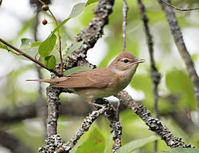
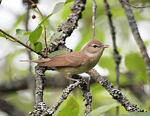

| Garden Warbler | |
|---|---|
|  | |
| Conservation status | |
| Binomial name | |
| Sylvia borin (Boddaert, 1783, France) |
| Garden Warbler | |
|---|---|
|  | |
| Conservation status | |
| Binomial name | |
| Sylvia borin (Boddaert, 1783, France) |
The Garden Warbler, Sylvia borin, is a common and widespread typical warbler which breeds throughout northern and temperate Europe into western Asia. This small passerine bird is strongly migratory, and winters in central and southern Africa.
This is a nondescript bird, 13-14.5 cm long, mainly brown-grey above and whitish below. It has no obvious distinctive features. Like most "warblers", it is insectivorous. It is a species of shady woodlands with ground cover for nesting. The nest is built in low shrub or brambles, and 3-7 eggs are laid.
The Garden Warbler's  song (help·info) is a pleasant chattering with many clearer notes like a Blackbird. The song can be confused with that of Blackcap, but is more melodious and lacks the warbling end-phrase found in Blackcap songs. Indeed, despite their dissimilar colour pattern, these two species are probably more closely related to each other than to any other typical warbler (The Sylvia Monograph, A & C Black, London; Jønsson & Fjeldså 2006). The composer Olivier Messiaen, who admired birdsong, used the song of S. borin as basis for his 1971 work La fauvette des jardins, the title being the French name of the species.
song (help·info) is a pleasant chattering with many clearer notes like a Blackbird. The song can be confused with that of Blackcap, but is more melodious and lacks the warbling end-phrase found in Blackcap songs. Indeed, despite their dissimilar colour pattern, these two species are probably more closely related to each other than to any other typical warbler (The Sylvia Monograph, A & C Black, London; Jønsson & Fjeldså 2006). The composer Olivier Messiaen, who admired birdsong, used the song of S. borin as basis for his 1971 work La fauvette des jardins, the title being the French name of the species.

.jpg){kind=link}